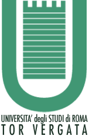
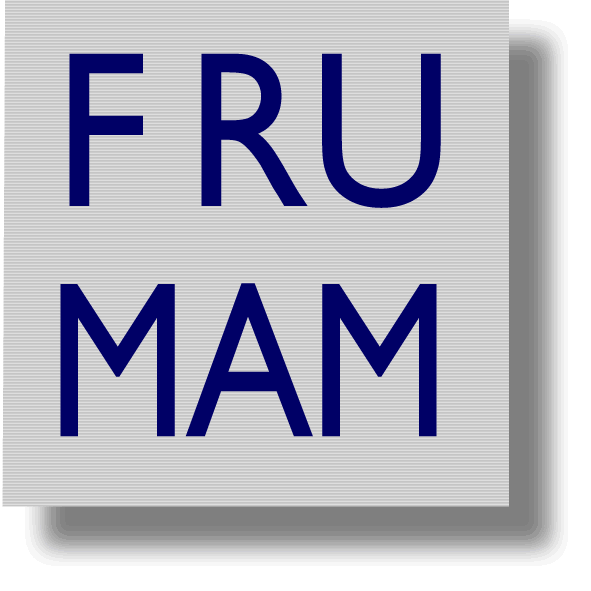
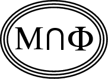
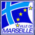

<html>
<head><title>CIRM 2008</title></head>
<body background="cirm2.jpg"; background repeat>
</body>
</html>

<title> WORKSHOP GREFI-MEFI 2008 </title>
<P>
<H2> 
<!--

-->
<font size=+4><font color=darkyelow>WORKSHOP GREFI-MEFI 2008.</font></font><BR>
<font size=+3><font color=yellow> FROM DYNAMICAL SYSTEMS TO STATISTICAL MECHANICS</font></font><br>
<font size=+2><font color=cyan>From 4-02-2008 to 7-03-2008 at 
<a href=http://www.cirm.univ-mrs.fr> <font color=yellow>CIRM</font></a>,  Marseille, France. 
</H2>
<HR>
 Organizing Committee :<br>
<a href=http://www.mat.uniroma2.it/~liverani><font color=yellow>Liverani Carlangelo</font></a>,
<a href=http://www.ceremade.dauphine.fr/~olla><font color=yellow>Stefano Olla</font></a>,
<a href=http://www.cpt.univ-mrs.fr/~picco/picco.htm><font color=yellow>Pierre Picco</font></a>,
<a href=http://www.cpt.univ-mrs.fr/~vaienti/vaienti.htm><font color=yellow>Sandro Vaienti</font></a>.
<BR>
 Scientific Committee :<br>
<a href=http://www.math.jussieu.fr/~baladi><font color=yellow>
Viviane Baladi</font></a>,
<a href=http://www.mat.unimi.it/users/bambusi><font color=yellow>Dario Bambusi</font></a>,  <a href=http://math.univ-lille1.fr/~goudon><font color=yellow>Thierry Goudon</font></a>,
<a href=http://www.mat.uniroma3.it/users/martin><font color=yellow>Fabio Martinelli</font></a>, <a href=http://univaq.it/~demasi><font color=yellow>Anna de Masi</font></a>,
<a href=http://www.cpt.univ-mrs.fr/~shlosman/shlosman.htm><font color=yellow>Senya Shlosman</font></a> 
</font>
<hr>
<center>&nbsp;&nbsp;&nbsp;&nbsp;<font face="Comic Sans MS" size="5"
        color="#FF6600"> SPONSORED BY</font></center>
<p><br>
<a href="http://www.cirm.univ-mrs.fr"></a>
&nbsp;&nbsp;&nbsp;
<a href="http://www.cnrs.fr"></a>
&nbsp;&nbsp;&nbsp;
<a href="http://www.altamatematica.it">
</a>
&nbsp;&nbsp;&nbsp;
<a href="http://www.grefi-mefi.org/"></a>
&nbsp;&nbsp;&nbsp;
<a href="http://web.uniroma2.it"></a>
&nbsp;&nbsp;&nbsp;
<a href="http://frumam.cnrs-mrs.fr"></a>
&nbsp;&nbsp;&nbsp;
<a href="http://www.dma.ens.fr/~bodineau/LHMSHE.html"><font face="Comic Sans MS" 
size="5" color="purple"> LHMSHE</font></a>
&nbsp;&nbsp;&nbsp;
<a href="http://www.iamp.org"></a>
&nbsp;&nbsp;&nbsp;
<a href="http://www.mairie-marseille.fr"></a>
&nbsp;&nbsp;&nbsp;
<a href="http://www.grandluminy.com"></a>

<hr>
<font color=yellow><font size=+3> Want to Participate? 
<a 
href=http://www.cirm.univ-mrs.fr/web.ang/liste_rencontre/Rencontres2008/Renc287/Renc287.html> 
<font color=cyan>click here</font></a> &nbsp;&nbsp;&nbsp;&nbsp;&nbsp;&nbsp;&nbsp;&nbsp;
</font></font><font color=lightgreen>Possible support for young researchers</fonts>
<hr>
<font color=lightyellow>The workshop will cover the themes close to the 
heart of the Group de Research Europeen (GDRE) GREFI-MEFI. The aim is to 
favor interactions between researchers of related field. Yet, each week 
will have a special flavor. <br><br>
<font size=+3>List of the weeks and their flavors.</font>
<p>
<font size=+3><font color=cyan> First Week</font></font>,<font size=+2> 4-8 February 2008</font><br>
<font color=yellow>Flavor</font>: Hamiltonian systems; PDE, Variational methods, Arnold diffusion, cocycles.<br>
<a href="Talks/program_week1.html"><font color=orange> Program </font></a>
&nbsp;&nbsp;&nbsp;&nbsp;&nbsp;&nbsp;&nbsp;&nbsp;&nbsp;&nbsp;&nbsp;&nbsp;&nbsp;
&nbsp;&nbsp;&nbsp;&nbsp;&nbsp;&nbsp;&nbsp;&nbsp;&nbsp;&nbsp;&nbsp;&nbsp;&nbsp;
<a 
href=http://www.cirm.univ-mrs.fr/web.ang/liste_rencontre/Rencontres2008/Renc287-1/adRenc287-1.html><font 
color=yellow>Registered participants</font></a>
</p>
<p>
<font size=+3><font color=cyan> Second Week</font></font>,<font size=+2> 11-15 February 2008</font><br>
<font color=yellow>Flavor</font>: Smooth ergodic theory; limit laws, random perturbations.<br>
<a href="Talks/program_week2.html"><font color=orange> Program</font></a>
&nbsp;&nbsp;&nbsp;&nbsp;&nbsp;&nbsp;&nbsp;&nbsp;&nbsp;&nbsp;&nbsp;&nbsp;&nbsp;              
&nbsp;&nbsp;&nbsp;&nbsp;&nbsp;&nbsp;&nbsp;&nbsp;&nbsp;&nbsp;&nbsp;&nbsp;&nbsp;
<a 
href=http://www.cirm.univ-mrs.fr/web.ang/liste_rencontre/Rencontres2008/Renc287-2/adRenc287-2.html><font
color=yellow>Registered participants</font></a>
</p>
<p>
<font size=+3><font color=cyan> Third Week</font></font>,<font size=+2> 18-22 February 2008</font><br>
<font color=yellow>Flavor</font>: Non-equilibrium phenomena; stationary measures and their properties.<br>
<a 
href="Talks/program_week3.html"><font 
color=orange> 
Program</font></a>
&nbsp;&nbsp;&nbsp;&nbsp;&nbsp;&nbsp;&nbsp;&nbsp;&nbsp;&nbsp;&nbsp;&nbsp;&nbsp;              
&nbsp;&nbsp;&nbsp;&nbsp;&nbsp;&nbsp;&nbsp;&nbsp;&nbsp;&nbsp;&nbsp;&nbsp;&nbsp;
<a 
href=http://www.cirm.univ-mrs.fr/web.ang/liste_rencontre/Rencontres2008/Renc287-3/adRenc287-3.html><font
color=yellow>Registered participants</font></a>
</p>
<p>
<font size=+3><font color=cyan> Fourth Week</font></font>,<font size=+2> 25-29 February 2008</font><br>
<font color=yellow>Flavor</font>: Equilibrium statistical mechanics.<br>
<a 
href="Talks/program_week4.pdf"><font
color=orange>
Program (tentative)</font></a>
&nbsp;&nbsp;&nbsp;&nbsp;&nbsp;&nbsp;&nbsp;&nbsp;&nbsp;&nbsp;&nbsp;&nbsp;&nbsp;
&nbsp;&nbsp;&nbsp;&nbsp;&nbsp;&nbsp;&nbsp;&nbsp;&nbsp;&nbsp;&nbsp;&nbsp;&nbsp;
<a
href=http://www.cirm.univ-mrs.fr/web.ang/liste_rencontre/Rencontres2008/Renc287-4/adRenc287-4.html><font
color=yellow>Registered participants</font></a>

</p>
<font size=+3><font color=cyan> Fifth Week</font></font>,
<font size=+2> 3-7 March 2008</font> &nbsp;&nbsp;&nbsp;&nbsp;<font 
color=yellow>(Organized with the collaboration of <a 
href="http://perso-math.univ-mlv.fr/users/roberto.cyril/english.html">
<font color=yellow>Cyril 
Roberto</font></a>)</font><br>
<font color=yellow>Flavor</font>: Stochastic dynamics and probability.<br>
<a  
href="http://perso-math.univ-mlv.fr/users/roberto.cyril/Gref-Mefi2008/program_week5.html
"><font
color=orange>
Program
(tentative)</font></a>
&nbsp;&nbsp;&nbsp;&nbsp;&nbsp;&nbsp;&nbsp;&nbsp;&nbsp;&nbsp;&nbsp;&nbsp;&nbsp;
&nbsp;&nbsp;&nbsp;&nbsp;&nbsp;&nbsp;&nbsp;&nbsp;&nbsp;&nbsp;&nbsp;&nbsp;&nbsp;
<a  
href=http://www.cirm.univ-mrs.fr/web.ang/liste_rencontre/Rencontres2008/Renc287-5/adRenc287-5.html><font
color=yellow>Registered participants</font></a>
<hr>
<font color=yellow><font size=+3> Want to Participate?
<a
href=http://www.cirm.univ-mrs.fr/web.ang/liste_rencontre/Rencontres2008/Renc287/Renc287.html><font 
color=cyan>click here</font></a>
</font></font>
<hr>
<p align="right"> <font color=lightgreen> <font size=+3>Some pictures of the 
calanques (20 minutes walk from CIRM): 
<a href="pic1.jpg">1</a>,<a href="pic2.jpg">2</a>,<a href="pic3.jpg">3</a>.
</font></font></p>

